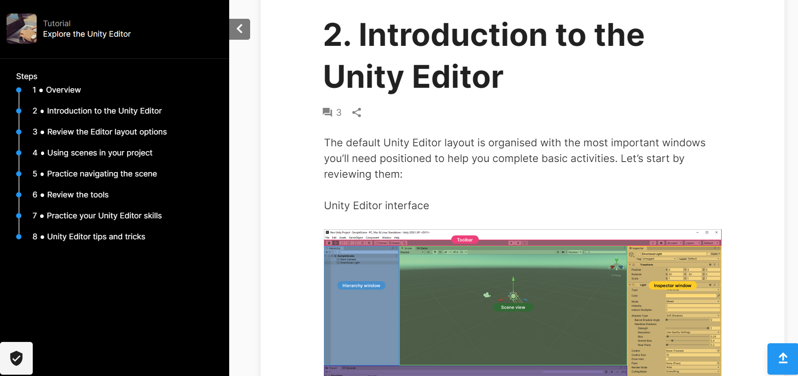
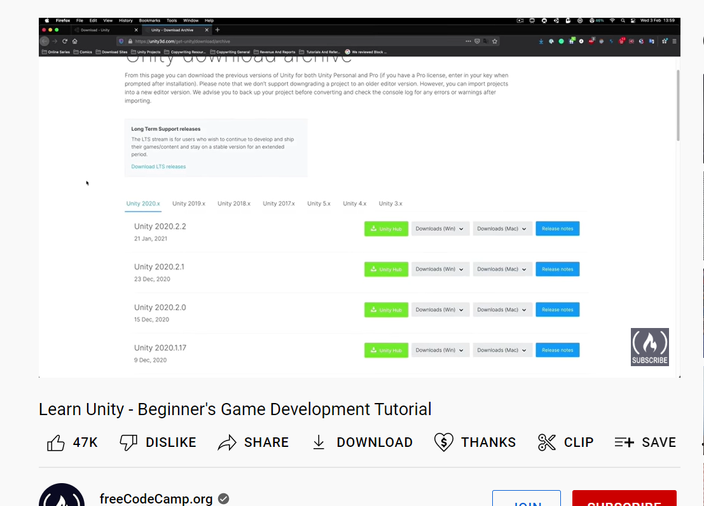
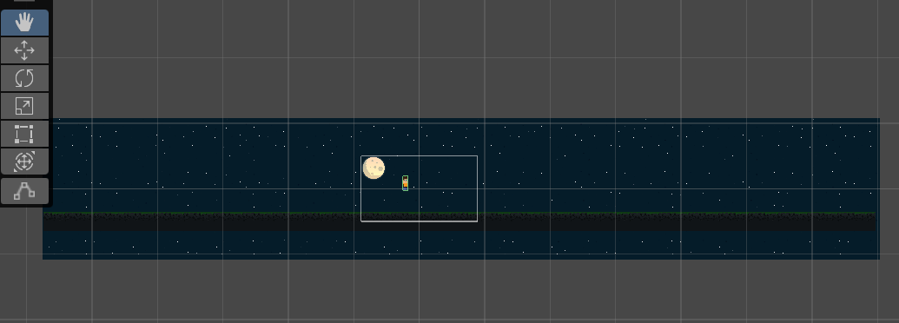
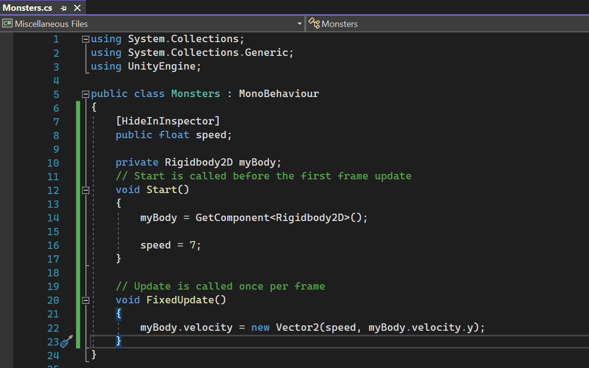

I wanted to create a fun educational game. So I had to figure out how I was going to do that. What type of program do I need, which one should I choose?
I decided to use Unity to create my project. I started learning about what Unity is and how to navigate the Unity Editor through the tutorials that they provided. I also watched some youtube tutorials about how the Unity Editor works. It's a lot to take in but I'm excited to start creating.
 I liked that Unity gave a template of a 2D platform game to help people become more familiar with the Unity Editor. I was able to mess around with the tools to move players/enemies, move objects inside the game like coins, and customize what my characters look like.
After playing around with the 2D microgame, I have a simple idea for my project. I want to use the 2D platform game idea to make a math game. Instead of coins, I want the player to collect numbers to get the sum. If they collect more than the sum, they lose a life. I think this is a good beginner game project for me.
Downloaded a font and sprites asset. Added in my 2 players and created animation. I learned about rigidbody, box collider, animator, and animation.
Learned about sorting layers, then I added the background and the ground. It wasn't too difficult but it was tedious copying and pasting to create a large layout. I added a box collider on ground and now my character doesn't fall straight through. Hooray!
I started adding code to make my player move. I attached a C# script to my player to add movement. It's so cool seeing it work!
The process is the same as when I created the players, but there are 3 enemies: A ghost, a green zombie, and a red zombie. I attached a C# script to add movement.
Watching youtube tutorials on adding math into games, and I'm choosing which codes to use and which ones don't apply to my game. I created text objects for the first number, the math operator and the sum. Then I made 8 random numbers and spread them out across the platform, I'm hoping to randomize the placements of the numbers but not quite sure how to do that.
So far I have a code to randomize the first number of the equation. This is difficult. I actually had to delete my script and redo it because Unity couldn't load up properly and it said it was an error with the math script I created. I don't have it all figured out yet so I'm still working on this.
For leveling up, I want to increase difficulty by first using single digit addition, then adding bigger numbers, and then eventually include subtraction, multiplication and division.
I think it'd be fun to create a shop where the player can buy custom clothing, armor, weapons, potions, etc. I hope to add that in the future.